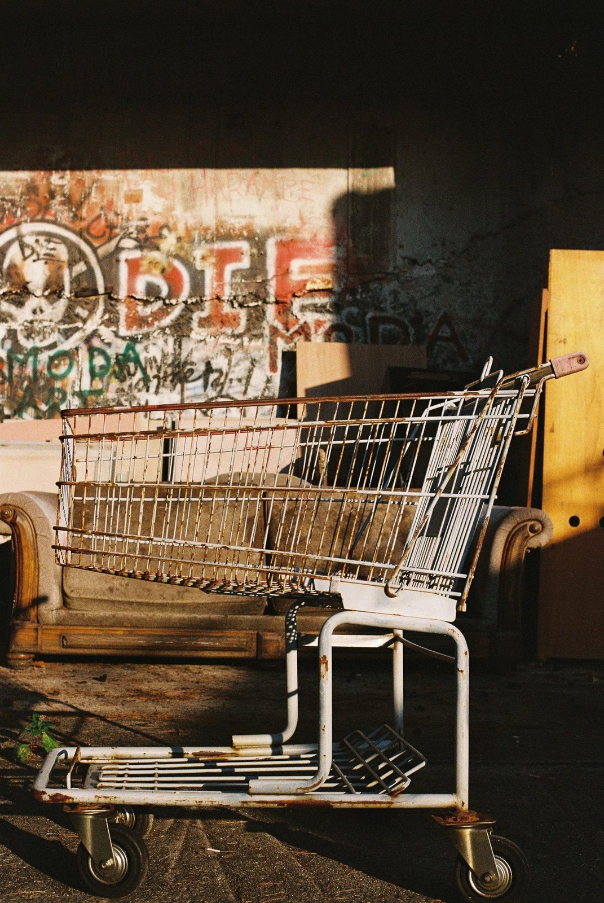
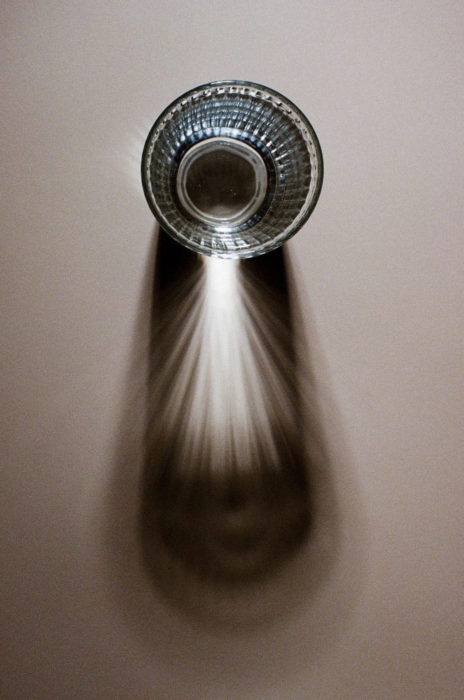
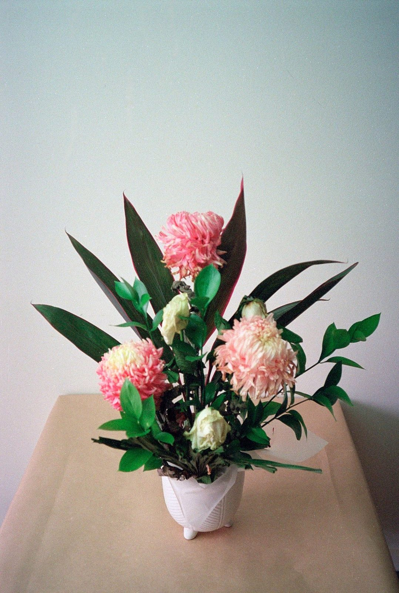

같은 필름, 같은 주제 앞에서도 사진은 전혀 다른 방향으로 번진다. 5ft.mag Vol.01의 사진 파트는 노애경, 박순렬, 장형수 세 작가가 각자의 방식으로 빛과 그림자를 바라본 기록이다.
이번 글에서는 각 작가의 대표 사진을 한 장씩만 꺼내고, 창간호 작업노트의 문장을 짧게 따라가며 세 개의 시선이 어디에서 출발했는지 소개한다.
노애경 — 시간의 흔적을 걷는 사진

한때 반짝이던 장소가 긴 시간을 지나오며, 여전히 기억을 간직한 채 존재한다.
노애경 작가의 작업노트는 오래 방치된 장소를 거닐며 빛과 그림자가 남긴 흔적을 찾는 데서 시작한다. 낡았지만 사라지지 않은 것들, 과거와 현재가 동시에 놓인 공간을 바라보며 작가는 시간과 사물의 본질을 묻는다. 대표 사진 속 꽃은 시들고 남겨진 시간까지 함께 끌어안으며, 반짝임이 사라진 뒤에도 남는 조용한 생기를 보여준다.
박순렬 — 빛은 사람, 그림자는 사물

사진이란 빛을 담는 일이었고, 그 빛과 떨어질 수 없는 그림자를 담는 일이기도 했다.
박순렬 작가는 작업노트에서 자신에게 사진 속 빛은 곧 사람이고, 그림자는 사람이 아닌 것들이었다고 적었다. 사람이 없는 장면에서도 그 생각은 남아 있다. 컵 안으로 들어온 빛, 바닥에 늘어진 그림자, 정물과 빛이 서로 얽히는 방식은 보이지 않는 사람의 온도를 대신한다.
장형수 — 오래 남는 기억의 파편

제 사진은 빛과 그림자가 어우러진 기억의 파편들을 담고자 합니다.
장형수 작가는 그 장면이 과거에 본 것인지, 앞으로 오래 기억될 것인지는 알 수 없다고 말한다. 중요한 것은 사진이 관람자의 추억이나 내면 깊숙한 장면으로 닿아 오래도록 여운을 남기는 일이다. 쇼핑카트와 벽면의 그림자, 낡은 공간 위에 떨어진 빛은 실제 장소를 넘어 어디선가 본 듯한 개인적 기억으로 이동한다.
세 사진은 서로 다른 온도를 가지고 있지만, 모두 같은 질문 앞에 놓인다. 빛이 지나간 뒤, 사진 안에는 무엇이 남는가.
창간호 사진 작업 미리보기
세 작가의 전체 사진과 작업노트는 5ft.mag Vol.01에서 이어집니다.